Foundations and history of picturebook studies Picturebook theory and poetics Children’s literature theory and criticism Narratology and cognitive literary studies Multimodality and social semiotics Visual literacy and reader response Metafiction and postmodern picturebooks Wordless picturebooks Disability, gender and other representations Migration, race and cultural identity Multilingualism and translation Illustration, book design and visual art Research theories and methodologies Grief, affect and performance International handbooks and companions Literacy, reading and language education Foundations and history of picturebook studies
Cover pending
American Picturebooks from Noah’s Ark to the Beast Within Barbara Bader
1976 · Macmillan · ISBN 0027080803
A historical survey of American picturebooks and the interaction of words, images and design.
Book details Foundations and history of picturebook studies Illustration, book design and visual art
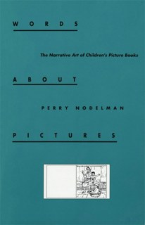
Words about Pictures: The Narrative Art of Children’s Picture Books Perry Nodelman
1988 · University of Georgia Press
Explains how the visual conventions of picturebooks shape narrative interpretation.
Book details Foundations and history of picturebook studies Picturebook theory and poetics Narratology and cognitive literary studies
Cover pending
Figuring Korean Futures: Children’s Literature in Modern Korea Dafna Zur
2017 · Stanford University Press
Examines how literature and visual culture have portrayed childhood in modern Korea.
Publisher or bibliographic record Foundations and history of picturebook studies
Picturebook theory and poetics
Cover pending
An Ecology of the Russian Avant-Garde Picturebook Sara Pankenier Weld
2018 · John Benjamins Publishing Company · ISBN 9789027200181
Reads early Soviet picturebooks in the context of the artistic networks and pressures of censorship that shaped them.
Publisher and edition details Picturebook theory and poetics Illustration, book design and visual art
How Picturebooks Work Maria Nikolajeva and Carole Scott
2001 · Routledge
Examines the contributions of verbal narration and visual composition to picturebook meaning.
Book details Picturebook theory and poetics Multimodality and social semiotics
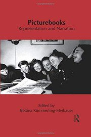
Picturebooks: Representation and Narration Bettina Kümmerling-Meibauer (ed.)
Routledge
Book details Picturebook theory and poetics Multimodality and social semiotics
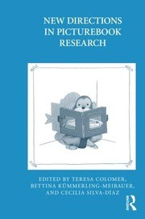
New Directions in Picturebook Research Teresa Colomer, Bettina Kümmerling-Meibauer and Cecilia Silva-Díaz (eds.)
Routledge
Book details Picturebook theory and poetics Multimodality and social semiotics
Challenging and Controversial Picturebooks: Creative and Critical Responses to Visual Texts Janet Evans (ed.)
Routledge
Book details Picturebook theory and poetics Multimodality and social semiotics
Cover pending
More Words about Pictures: Current Research on Picturebooks and Visual/Verbal Texts for Young People Naomi Hamer, Perry Nodelman and Mavis Reimer (eds.)
2017 · Routledge · ISBN 9781138656642
Essays on visual and verbal texts for young readers, revisiting questions raised by Nodelman’s earlier work.
Book details Picturebook theory and poetics Multimodality and social semiotics International handbooks and companions
Cover pending
Reading Contemporary Picturebooks: Picturing Text David Lewis
2001 · RoutledgeFalmer · ISBN 9780415208871
Explores word–image relationships and the flexible forms of contemporary picturebooks.
Picturebook theory and poetics Metafiction and postmodern picturebooks
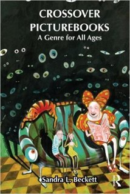
Crossover Picturebooks: A Genre for All Ages Sandra L. Beckett
2012 · Routledge
Studies how picturebooks cross age boundaries through art, intertextuality and experimentation.
Book details Picturebook theory and poetics Metafiction and postmodern picturebooks Wordless picturebooks
Cover pending
The Picturebook between Fiction and Reality Smiljana Narančić Kovač and Nikola Novaković (eds.)
2027 · Routledge · ISBN 9781041230717
Studies the relation between fiction and reality in picturebooks. The publisher lists a 2027 copyright year.
Book details Picturebook theory and poetics Narratology and cognitive literary studies International handbooks and companions
Cover pending
Touchstones: Picture Books: Reflections on the Best in Children’s Literature Perry Nodelman (ed.)
1995 · Scarecrow Press · ISBN 9780810825635
Critical essays on individual picturebooks and the techniques that shape their visual narratives.
Publisher or bibliographic record Picturebook theory and poetics
Cover pending
Książka obrazkowa: wprowadzenie Małgorzata Cackowska, Hanna Dymel-Trzebiatowska and Jerzy Szyłak (eds.)
2017 · Instytut Kultury Popularnej · Poznań
Polish-language introduction to picturebook terminology, forms and methods of interpretation.
Publisher or bibliographic record Picturebook theory and poetics
Children’s literature theory and criticism
Cover pending
Voiceless Vanguard: The Infantilist Aesthetic of the Russian Avant-Garde Sara Pankenier Weld
2014 · Northwestern University Press · ISBN 9780810129849
Traces how children’s drawings, language and perspectives informed formal experiments in Russian avant-garde art and writing.
Publisher and edition details Russian translation by Irina Znayesheva · Academic Studies Press, BiblioRossica · 2023 · Hardcover ISBN 9798887193472. Russian edition details
Children’s literature theory and criticism Illustration, book design and visual art
Cover pending
Children’s Literature: A Very Short Introduction Kimberley Reynolds
Oxford University Press
Book details Children’s literature theory and criticism
Cover pending
Understanding Children’s Literature Peter Hunt (ed.)
Routledge
Book details Children’s literature theory and criticism
Cover pending
Aesthetic Approaches to Children’s Literature: An Introduction Maria Nikolajeva
Scarecrow Press
Book details Children’s literature theory and criticism
The Hidden Adult: Defining Children’s Literature Perry Nodelman
2008 · Johns Hopkins University Press
Examines the adult knowledge and assumptions that shape texts written for children.
Book details Children’s literature theory and criticism Narratology and cognitive literary studies
Cover pending
The Pleasures of Children’s Literature Perry Nodelman and Mavis Reimer
2003 · Allyn and Bacon
Third edition of an introduction to reading and interpreting children’s literature.
Book details Children’s literature theory and criticism Visual literacy and reader response
Cover pending
Children’s Literature Comes of Age: Toward a New Aesthetic Maria Nikolajeva
1996 · Garland Publishing
Examines children’s literature through literary theory, genre and narrative form.
Book details Children’s literature theory and criticism Narratology and cognitive literary studies
Cover pending
Language and Ideology in Children’s Fiction John Stephens
1992 · Longman
Examines the role of narrative language and ideology in children’s fiction.
Book details Children’s literature theory and criticism Research theories and methodologies Migration, race and cultural identity
Crossover Fiction: Global and Historical Perspectives Sandra L. Beckett
2009 · Routledge · ISBN 9780415980333
Traces fiction read across child and adult audiences in different traditions and periods.
Book details Children’s literature theory and criticism Foundations and history of picturebook studies Migration, race and cultural identity
Looking Glasses and Neverlands: Lacan, Desire, and Subjectivity in Children’s Literature Karen Coats
2004 · University of Iowa Press · Iowa City
A Lacanian study of how children’s texts negotiate desire and subjectivity.
Publisher or bibliographic record Children’s literature theory and criticism
Cover pending
The Bloomsbury Introduction to Children’s and Young Adult Literature Karen Coats
2017 · Bloomsbury Academic · ISBN 9781472575548
Introduces critical approaches to writing for young readers across genres and formats.
Publisher or bibliographic record Children’s literature theory and criticism
Cover pending
The Gothic in Children’s Literature: Haunting the Borders Anna Jackson, Roderick McGillis and Karen Coats (eds.)
2008 · Routledge · Paperback ISBN 9780415875745
Investigates how Gothic conventions test the boundaries of literature written for children.
Publisher or bibliographic record Children’s literature theory and criticism
Cover pending
New Directions in Children’s Gothic: Debatable Lands Anna Jackson and Karen Coats (eds.)
2017 · Routledge · eBook ISBN 9781315695877
Considers how contemporary texts rethink Gothic forms and ideas about childhood.
Publisher or bibliographic record Children’s literature theory and criticism
Cover pending
Canon Constitution and Canon Change in Children’s Literature Bettina Kümmerling-Meibauer and Anja Müller (eds.)
2017 · Routledge · eBook ISBN 9781315680385
Examines how canons for young readers are made and revised, including a chapter on the Polish canon co-authored by Dorota Michułka.
Publisher or bibliographic record Children’s literature theory and criticism
Cover pending
A representação da criança na literatura infantojuvenil: Rémi, Pinóquio e Peter Pan Isabel Lopes Coelho
2020 · Perspectiva · eBook ISBN 9786555050394
Portuguese-language comparative study of how three classics portray childhood. Coelho is a convenor of the 2027 IRSCL Congress in São Paulo.
Publisher or bibliographic record Children’s literature theory and criticism
Cover pending
Infância, palavra de risco Rosana Kohl Bines
2022 · Numa Editora · Rio de Janeiro · ISBN 9786588831441
Portuguese-language essays connecting childhood with literature and the visual arts. Bines is a convenor of the 2027 IRSCL Congress in São Paulo.
Publisher or bibliographic record Children’s literature theory and criticism
Cover pending
Yes to Solidarity, No to Oppression: Radical Fantasy Fiction and Its Young Readers Justyna Deszcz-Tryhubczak
2016 · Wydawnictwo Uniwersytetu Wrocławskiego · Wrocław
Studies radical fantasy and young readers’ engagement with solidarity and oppression.
Publisher or bibliographic record Children’s literature theory and criticism
Cover pending
Children’s Literature and Intergenerational Relationships: Encounters of the Playful Kind Justyna Deszcz-Tryhubczak and Irena Barbara Kalla (eds.)
2021 · Palgrave Macmillan · Cham · eBook ISBN 9783030677008
Considers how literature encourages play and imaginative exchanges across generations.
Publisher or bibliographic record Children’s literature theory and criticism
Cover pending
Intergenerational Solidarity in Children’s Literature and Film Justyna Deszcz-Tryhubczak and Zoe Jaques (eds.)
2021 · University Press of Mississippi · Jackson
Examines how books and films for young audiences imagine relationships of mutual support across generations.
Publisher or bibliographic record Children’s literature theory and criticism
Rulers of Literary Playgrounds: Politics of Intergenerational Play in Children’s Literature Justyna Deszcz-Tryhubczak and Irena Barbara Kalla (eds.)
2022 · Routledge · ISBN 9780367501433
Studies the power relations and possibilities created when children and adults play together in and through literature.
Publisher or bibliographic record Children’s literature theory and criticism
Cover pending
One Earth, One People: The Mythopoeic Fantasy Series of Ursula K. Le Guin, Lloyd Alexander, Madeleine L’Engle and Orson Scott Card Marek C. Oziewicz
2008 · McFarland
Compares how four fantasy series use myth to imagine human relations and ethical responsibilities.
Publisher or bibliographic record Children’s literature theory and criticism
Narratology and cognitive literary studies
Cover pending
Jedna priča – dva pripovjedača: Slikovnica kao pripovijed Smiljana Narančić Kovač
2015 · ArTresor naklada · ISBN 9789538012044
Croatian-language study of the picturebook as narrative, also known as One Story – Two Narrators.
Book details Narratology and cognitive literary studies Picturebook theory and poetics
Cover pending
The Rhetoric of Character in Children’s Literature Maria Nikolajeva
2002 · Scarecrow Press
Examines techniques of character construction in literature for young people.
Book details Narratology and cognitive literary studies Children’s literature theory and criticism
From Mythic to Linear: Time in Children’s Literature Maria Nikolajeva
2000 · Scarecrow Press
Studies how temporal structures shape the experience of reading children’s literature.
Book details Narratology and cognitive literary studies Children’s literature theory and criticism
Reading for Learning: Cognitive Approaches to Children’s Literature Maria Nikolajeva
2014 · John Benjamins
Applies cognitive literary studies to children’s reading and learning.
Book details Narratology and cognitive literary studies Visual literacy and reader response
Cover pending
Alternating Narratives in Fiction for Young Readers: Twice Upon a Time Perry Nodelman
2017 · Palgrave Macmillan · eBook ISBN 9783319508177
Examines works that alternate between narrators or narrative strands and the reading practices they invite.
Publisher or bibliographic record Narratology and cognitive literary studies
Multimodality and social semiotics
Reading Visual Narratives: Image Analysis of Children’s Picture Books Clare Painter, J. R. Martin and Len Unsworth
2013 · Equinox
A social-semiotic framework for the analysis of visual storytelling in picturebooks.
Book details Multimodality and social semiotics Picturebook theory and poetics Research theories and methodologies
Reading Images: The Grammar of Visual Design Gunther Kress and Theo van Leeuwen
2021 · Routledge · ISBN 9780415672566
Third edition of a social-semiotic framework for analysing images and visual composition.
Book details Multimodality and social semiotics Research theories and methodologies Illustration, book design and visual art
Cover pending
Multimodal Metaphor Charles J. Forceville and Eduardo Urios-Aparisi (eds.)
2009 · Mouton de Gruyter · ISBN 9783110215366
Examines how metaphors are conveyed through combinations of modes.
Book details Multimodality and social semiotics Research theories and methodologies
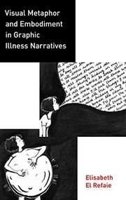
Visual Metaphor and Embodiment in Graphic Illness Narratives Elisabeth El Refaie
2019 · Oxford University Press
Explores embodied visual metaphor in graphic narratives about illness.
Book details Multimodality and social semiotics Disability, gender and other representations Research theories and methodologies
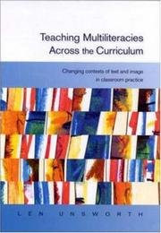
Teaching Multiliteracies Across the Curriculum: Changing Contexts of Text and Image in Classroom Practice Len Unsworth
2001 · Open University Press
Connects multimodal text analysis with literacy teaching across subjects.
Book details Multimodality and social semiotics Visual literacy and reader response
Cover pending
Multimodal Discourse: The Modes and Media of Contemporary Communication Gunther Kress and Theo van Leeuwen
2001 · Arnold · ISBN 9780340608777
A framework for examining how multiple modes contribute to communication.
Book details Multimodality and social semiotics Research theories and methodologies
Literacy, reading and language education
Cover pending
Reading to Make a Difference: Using Literature to Help Students Speak Freely, Think Deeply, and Take Action Lester L. Laminack · Katie Kelly
2019 · Heinemann
Provides classroom approaches for discussing difference and considering how literary reading can inform action.
Book details Literacy, reading and language education
Polyrhythmicity in Language, Music and Society: Complex Time Relations in the Arts, Humanities and Social Sciences Richard Andrews
2021 · Springer Singapore · ISBN 9789811605659
Examines overlapping rhythms in music, literary forms and social life.
Book details Multimodality and social semiotics Literacy and language education
Multimodality, Poetry and Poetics Richard Andrews
2018 · Routledge · ISBN 9781138696600
Studies the visual, verbal and formal features of poetry, with attention to rhythm, imagery and framing.
Book details Multimodality and social semiotics Literacy and language education
A Prosody of Free Verse: Explorations in Rhythm Richard Andrews
2017 · Routledge · ISBN 9781138806894
Develops ways to analyse free-verse rhythm through the line, additive patterns and performance.
Book details Multimodality and social semiotics Literacy and language education
Choreography of the Poem: Exploring Poetry and Prosody through Dance Richard Andrews
2025 · Springer Singapore · ISBN 9789819692354
Reads poetic form through bodily movement, spatial arrangement and the teaching of poetry.
Book details Multimodality and social semiotics Literacy and language education
Cover pending
Re-framing Literacy: Teaching and Learning in English and the Language Arts Richard Andrews
2010 · Routledge · ISBN 9780415995535
Reconsiders literacy and communication across media and in the English curriculum.
Book details Literacy, reading and language education Multimodality and social semiotics
Argumentation in Higher Education: Improving Practice Through Theory and Research Richard Andrews
2010 · Routledge · ISBN 9780415995016
Uses argumentation theory to examine teaching and academic writing in higher education.
Book details Literacy, reading and language education Research theories and methodologies
A Theory of Contemporary Rhetoric Richard Andrews
2013 · Routledge
Develops a theory of rhetoric that accounts for communication across modes and media.
Book details Literacy, reading and language education Multimodality and social semiotics
Cover pending
Reading Motivation and Engagement in the Primary School Classroom: Theory, Research and Practice Sarah McGeown
2013 · United Kingdom Literacy Association · ISBN 9781897638712
Connects research on children’s reading motivation and engagement with classroom practice.
Book details Literacy, reading and language education Visual literacy and reader response
Cover pending
Reading for Pleasure: International Perspectives Teresa Cremin and Sarah McGeown (eds.)
2025 · Routledge · ISBN 9781032856155
International research on reading for pleasure and its implications for education.
Book details Literacy, reading and language education Visual literacy and reader response International handbooks and companions
Cover pending
Love to Read: A Programme to Inspire and Sustain a Love of Reading Sarah McGeown, Emily Oxley and the Love to Read team
2023 · University of Edinburgh
Open practitioner programme for supporting children’s motivation to read.
Book details Literacy, reading and language education Visual literacy and reader response
Cover pending
Using the South Tyneside Assessment of Syntactic Structures (STASS): Tracking the Spoken Language Development of Deaf Children Rachel O’Neill
2020 · Scottish Sensory Centre · ISBN 9780954603670
A practitioner book on using STASS to track spoken language development in deaf children.
Book details Literacy, reading and language education Disability, gender and other representations Research theories and methodologies
Cover pending
Professional Responsibility and Relationality in Deaf Education Michele Friedner, Rachel O’Neill and Kristin Snoddon (eds.)
2026 · Routledge · ISBN 9781041238737
Studies responsibility, professional relationships and ethics in deaf education.
Book details Literacy, reading and language education Disability, gender and other representations
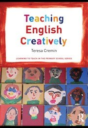
Teaching English Creatively Teresa Cremin
2023 · Routledge · ISBN 9780367518387
Third edition on creative approaches to teaching primary English.
Book details Literacy, reading and language education Picturebook creation and creative writing
Cover pending
Building Communities of Engaged Readers: Reading for Pleasure Teresa Cremin, Marilyn Mottram, Fiona M. Collins, Sacha Powell and Kimberly Safford
2014 · Routledge · ISBN 9781138777477
Research on teachers’ reading lives and the development of classroom reading communities.
Book details Literacy, reading and language education Visual literacy and reader response
Reading Teachers: Nurturing Reading for Pleasure Teresa Cremin, Helen Hendry, Lucy Rodriguez Leon and Natalia Kucirkova (eds.)
2023 · Routledge · ISBN 9781032104928
Research-informed accounts of how teachers build communities of readers.
Book details Literacy, reading and language education Visual literacy and reader response
Cover pending
Writing Voices: Creating Communities of Writers Teresa Cremin and Debra Myhill
2012 · Routledge · ISBN 9780415579810
Examines writing identities and the classroom conditions that nurture writing.
Book details Literacy, reading and language education Picturebook creation and creative writing
Cover pending
Storytelling in Early Childhood: Enriching Language, Literacy and Classroom Culture Teresa Cremin, Rosie Flewitt, Ben Mardell and Joan Swann (eds.)
2017 · Routledge · ISBN 9781138932135
Research on young children’s storytelling and its role in language and literacy development.
Literacy, reading and language education Picturebook creation and creative writing Visual literacy and reader response
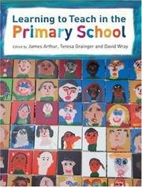
Learning to Teach in the Primary School Teresa Cremin, Helen Hendry and Anna Harrison (eds.)
2025 · Routledge · ISBN 9781032691763
Fifth edition of a guide to primary teaching, including English and literacy.
Book details Literacy, reading and language education International handbooks and companions
Cover pending
Children’s Literature and the Developing Reader Karen Coats
Kendall Hunt · ISBN 9798385119028
Connects the aesthetics of children’s books with the development of reading and multimodal literacies.
Publisher or bibliographic record Literacy, reading and language education
Cover pending
The Posthuman Child: Educational Transformation through Philosophy with Picturebooks Karin Murris
2016 · Routledge · ISBN 9781138858435
Connects picturebook inquiry with posthumanist approaches to childhood and education.
Publisher or bibliographic record Literacy, reading and language education
Cover pending
Literacies, Literature and Learning: Reading Classrooms Differently Karin Murris and Joanna Haynes (eds.)
2018 · Routledge · ISBN 9781138301924
Explores posthumanist approaches to reading, learning and classroom research.
Publisher or bibliographic record Literacy, reading and language education
Cover pending
Ad usum Delphini: o szkolnej edukacji literackiej – dawniej i dziś Dorota Michułka
2013 · Wydawnictwo Uniwersytetu Wrocławskiego · Wrocław
Polish-language study of the history and practice of literary education in schools.
Publisher or bibliographic record Literacy, reading and language education
Visual literacy and reader response
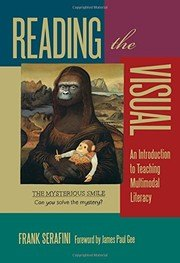
Reading the Visual: An Introduction to Teaching Multimodal Literacy Frank Serafini
2014 · Teachers College Press
Introduces methods for reading multimodal texts and teaching visual literacy.
Book details Visual literacy and reader response Research theories and methodologies
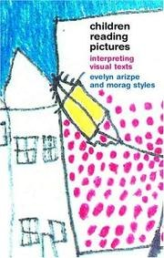
Children Reading Pictures: New Contexts and Approaches to Picturebooks Evelyn Arizpe, Kate Noble and Morag Styles (eds.)
Routledge
Book details Visual literacy and reader response Research theories and methodologies
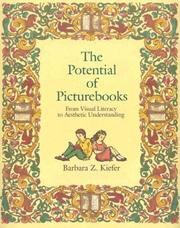
Cover pending
The Potential of Picturebooks: From Visual Literacy to Aesthetic Understanding Barbara Zulandt Kiefer
1995 · Merrill · ISBN 9780023635359
Connects children’s responses to picturebooks with the development of aesthetic understanding.
Book details Visual literacy and reader response Foundations and history of picturebook studies
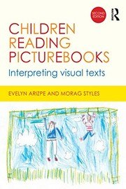
Children Reading Picturebooks: Interpreting Visual Texts Evelyn Arizpe and Morag Styles
2016 · Routledge
Second edition of a study of how children interpret visual texts.
Book details Visual literacy and reader response Wordless picturebooks Research theories and methodologies
Cover pending
Talking Beyond the Page: Reading and Responding to Picturebooks Janet Evans (ed.)
2009 · Routledge · ISBN 9780415476966
Studies how children discuss and respond to picturebook images and narratives.
Book details Visual literacy and reader response Picturebook theory and poetics
Cover pending
Exploring Challenging Picturebooks in Education: International Perspectives on Language and Literature Learning Åse Marie Ommundsen, Gunnar Haaland and Bettina Kümmerling-Meibauer (eds.)
2022 · Routledge · ISBN 9781003013952
International studies of the role of challenging picturebooks in literacy and literature education.
Book details Visual literacy and reader response Picturebook theory and poetics International handbooks and companions
Cover pending
Learning from Picturebooks: Perspectives from Child Development and Literacy Studies Bettina Kümmerling-Meibauer, Jörg Meibauer, Kerstin Nachtigäller and Katharina J. Rohlfing (eds.)
2015 · Routledge · ISBN 9781138294417
Investigates what children can learn from print and digital picturebooks.
Book details Visual literacy and reader response Narratology and cognitive literary studies International handbooks and companions
Cover pending
Picturebooks, Pedagogy and Philosophy Joanna Haynes and Karin Murris
2012 · Routledge · Paperback ISBN 9780415817929
Uses picturebooks to support philosophical inquiry with children and examine how adults listen to their ideas.
Publisher or bibliographic record Visual literacy and reader response
Wordless picturebooks
Cover pending
Visual Journeys Through Wordless Narratives: An International Inquiry With Immigrant Children and The Arrival Evelyn Arizpe, Teresa Colomer and Carmen Martínez-Roldán
Bloomsbury Academic
Book details Wordless picturebooks Migration, race and cultural identity Visual literacy and reader response
Disability, gender and other representations
Cover pending
Rethinking Disability in India Anita Ghai
2015 · Routledge
Places disability in the context of Indian social, political and cultural life.
Book details Disability, gender and other representations
Cover pending
Disability Aesthetics Tobin Siebers
2010 · University of Michigan Press · ISBN 9780472071005
Situates disability within debates about modern art, form and aesthetic value.
Book details Disability, gender and other representations
Cover pending
Aesthetic Nervousness: Disability and the Crisis of Representation Ato Quayson
2007 · Columbia University Press
Examines how disability representations unsettle the conventions through which readers interpret a text.
Book details Disability, gender and other representations
Cover pending
Narrative Prosthesis: Disability and the Dependencies of Discourse David T. Mitchell · Sharon L. Snyder
2000 · University of Michigan Press · ISBN 9780472067480
Examines how narratives rely on disability as a device for characterisation and plot.
Book details Disability, gender and other representations
Cover pending
Staring: How We Look Rosemarie Garland-Thomson
2009 · Oxford University Press
Explores staring as a social relationship and examines its role in encounters with visible disability.
Book details Disability, gender and other representations
Disability Studies: An Interdisciplinary Introduction Dan Goodley
2024 · 3rd ed. · Sage · ISBN 9781529682281
An introduction to disability scholarship across education, activism and the social sciences.
Book details Disability, gender and other representations
Extraordinary Bodies: Figuring Physical Disability in American Culture and Literature Rosemarie Garland Thomson
1997 · Columbia University Press · ISBN 9780231105170
Examines how American literature and culture construct disability and bodily difference through representation.
Book details Disability, gender and other representations Children’s literature theory and criticism
Cover pending
Feminist, Queer, Crip Alison Kafer
2013 · Indiana University Press · ISBN 9780253009227
Develops a political and relational account of disability and asks whose lives are imagined in collective futures.
Book details Disability, gender and other representations Children’s literature theory and criticism
The Cambridge Companion to Literature and Disability Clare Barker and Stuart Murray (eds.)
2018 · Cambridge University Press · ISBN 9781107458130
An introduction to literary disability studies across genres, historical periods and critical approaches.
Book details Disability, gender and other representations Children’s literature theory and criticism
Cover pending
Disability in Modern Children’s Fiction John Quicke
Routledge
Book details Disability, gender and other representations
Cover pending
Disability, Literature, Genre: Representation and Affect in Contemporary Fiction Ria Cheyne
Liverpool University Press
Book details Disability, gender and other representations
Cover pending
Speech and Silence in Contemporary Children’s Literature Danielle Price
Routledge
Book details Disability, gender and other representations
Cover pending
Gender(ed) Identities: Critical Rereadings of Gender in Children’s and Young Adult Literature Tricia Clasen and Holly Hassel (eds.)
Routledge
Book details Disability, gender and other representations
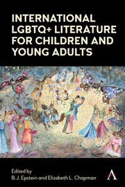
International LGBTQ+ Literature for Children and Young Adults B. J. Epstein and Elizabeth L. Chapman (eds.)
Anthem Press
Book details Disability, gender and other representations
A Multimodal Approach to Challenging Gender Stereotypes in Children’s Picture Books A. Jesús Moya-Guijarro and Eija Ventola (eds.)
2022 · Routledge · ISBN 9780367703592
Uses multimodal analysis to examine how picturebooks challenge gender stereotypes.
Book details Disability, gender and other representations Multimodality and social semiotics Research theories and methodologies
Cover pending
Child as Citizen: Agency and Activism in Children’s Literature and Culture Giuliana Fenech (ed.)
2025 · University Press of Mississippi · ISBN 9781496858412
Essays on childhood citizenship, agency and activism in literature and culture.
Book details Disability, gender and other representations Migration, race and cultural identity Children’s literature theory and criticism
Further reading: The One in the Wheelchair: Dr Rebecca Butler on children’s books and disability .
Migration, race and cultural identity
Cover pending
A Multimodal Approach to Picturebooks on Migration and Migrants Carmen Santamaría-García and Eija Ventola (eds.)
2026 · Routledge · ISBN 9781032964331
Essays on migration narratives and multimodal analysis. Includes chapters co-authored by Izaskun Elorza.
Book details Migration, race and cultural identity Multimodality and social semiotics Research theories and methodologies
Cover pending
Imagining Sameness and Difference in Children’s Literature: From the Enlightenment to the Present Day Emer O’Sullivan and Andrea Immel (eds.)
2017 · Palgrave Macmillan · eBook ISBN 9781137461698
Traces how children’s literature represents cultural difference across periods and national traditions.
Publisher or bibliographic record Migration, race and cultural identity
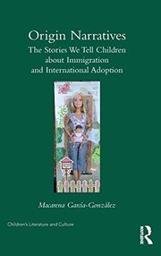
Origin Narratives: The Stories We Tell Children About Immigration and International Adoption Macarena García-González
2017 · Routledge · ISBN 9780415785488
Examines how stories of migration and adoption shape ideas of belonging in contemporary Spain. García-González convened IRSCL 2021.
Publisher or bibliographic record Migration, race and cultural identity
Cover pending
Representing Africa in Children’s Literature: Old and New Ways of Seeing Vivian Yenika-Agbaw
2008 · Routledge · ISBN 9780415974684
Examines how African and Western writers represent youth in African societies and how colonial legacies shape those portrayals.
Publisher or bibliographic record Migration, race and cultural identity
Cover pending
African Youth in Contemporary Literature and Popular Culture: Identity Quest Vivian Yenika-Agbaw and Lindah Mhando (eds.)
2014 · Routledge · Paperback ISBN 9781138092402
Studies how young Africans are represented and how they construct identities through literature and popular culture.
Migration, race and cultural identity
Cover pending
Fairy Tales with a Black Consciousness: Essays on Adaptations of Familiar Stories Vivian Yenika-Agbaw, Ruth McKoy Lowery and Laretta Henderson (eds.)
2013 · McFarland · Jefferson, North Carolina · ISBN 9780786471294
Examines retellings of familiar tales and how they centre Black experiences across the diaspora.
Publisher or bibliographic record Migration, race and cultural identity
Multilingualism and translation
Cover pending
Translating Picturebooks: Revoicing the Verbal, the Visual and the Aural for a Child Audience Riitta Oittinen, Anne Ketola and Melissa Garavini
Routledge
Book details Multilingualism and translation Migration, race and cultural identity
Voices of the Other: Children’s Literature and the Postcolonial Context Roderick McGillis (ed.)
Routledge
Book details Multilingualism and translation Migration, race and cultural identity
Cover pending
Language, Identity and Diversity in Picturebooks: An Aotearoa New Zealand Perspective Nicola Daly
2025 · Routledge · ISBN 9781003411888
Studies how picturebooks in Aotearoa New Zealand represent linguistic diversity and identity.
Book details Multilingualism and translation Migration, race and cultural identity Disability, gender and other representations
Cover pending
Comparative Children’s Literature Emer O’Sullivan; translated by Anthea Bell
2005 · Routledge · Paperback ISBN 9780415564120
A comparative framework for translation, circulation and the construction of international classics.
Publisher or bibliographic record Multilingualism and translation
Cover pending
Kinderliterarische Komparatistik Emer O’Sullivan
2000 · Universitätsverlag C. Winter · Heidelberg · ISBN 9783825310394
German-language study of the methods and scope of comparative children’s literature.
Publisher or bibliographic record Multilingualism and translation
Cover pending
Kinderliteratur im interkulturellen Prozeß: Studien zur Allgemeinen und Vergleichenden Kinderliteraturwissenschaft Hans-Heino Ewers, Gertrud Lehnert and Emer O’Sullivan (eds.)
1994 · Metzler · Stuttgart and Weimar
German-language collection on intercultural exchange and comparative research in children’s literature.
Publisher or bibliographic record Multilingualism and translation
Illustration, book design and visual art
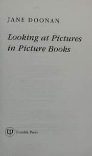
Looking at Pictures in Picture Books Jane Doonan
1993 · Thimble Press · ISBN 9780903355407
A guide to close reading of picturebook images and their contribution to meaning.
Book details Illustration, book design and visual art Foundations and history of picturebook studies Visual literacy and reader response Research theories and methodologies
Cover pending
Children’s Picturebooks: The Art of Visual Storytelling Martin Salisbury and Morag Styles
2020 · Laurence King Publishing · ISBN 9781786275738
Second edition on the history, design, illustration and creation of children’s picturebooks.
Book details Illustration, book design and visual art Picturebook creation and creative writing Foundations and history of picturebook studies
Cover pending
100 Great Children’s Picturebooks Martin Salisbury
2015 · Laurence King Publishing · ISBN 9781780674087
A collection of case studies in picturebook illustration, art and design.
Book details Illustration, book design and visual art Picturebook creation and creative writing Foundations and history of picturebook studies
Cover pending
Photography in Children’s Literature Elina Druker and Bettina Kümmerling-Meibauer (eds.)
2023 · John Benjamins Publishing Company · ISBN 9789027214355
Studies photographic illustration, book design and genre across ten countries.
Publisher or bibliographic record Illustration, book design and visual art
Cover pending
Children’s Literature and the Avant-Garde Elina Druker and Bettina Kümmerling-Meibauer (eds.)
2015 · John Benjamins Publishing Company · ISBN 9789027201591
Explores how avant-garde movements shaped experimental publication and visual storytelling for children.
Publisher or bibliographic record Illustration, book design and visual art
Research theories and methodologies
Critical Content Analysis of Visual Images in Books for Young People: Reading Images Holly Johnson, Janelle Mathis and Kathy G. Short (eds.)
2019 · Routledge · ISBN 9781138387058
Applies critical content analysis to illustration and visual meaning in books for young readers.
Book details Research theories and methodologies Visual literacy and reader response
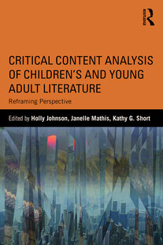
Cover pending
Critical Content Analysis of Children’s and Young Adult Literature: Reframing Perspective Holly Johnson, Janelle Mathis and Kathy G. Short (eds.)
2017 · Routledge · ISBN 9781315651927
Shows how critical content analysis can interrogate perspective and power in youth literature.
Book details Research theories and methodologies Disability, gender and other representations Migration, race and cultural identity
Cover pending
Analysing Discourse: Textual Analysis for Social Research Norman Fairclough
2003 · Routledge · ISBN 9780415258937
Connects detailed textual analysis with social research and critical discourse analysis.
Book details Research theories and methodologies Multimodality and social semiotics
Thematic Analysis: A Practical Guide Virginia Braun and Victoria Clarke
2022 · SAGE
A guide to reflexive thematic analysis for qualitative researchers.
Book details Research theories and methodologies
Cover pending
Visual Methodologies: An Introduction to Researching with Visual Materials Gillian Rose
2022 · SAGE · ISBN 9781529767193
Fifth edition of a guide to selecting and applying methods for the study of images.
Book details Research theories and methodologies Visual literacy and reader response Illustration, book design and visual art
Cover pending
Children’s Cultures after Childhood Justyna Deszcz-Tryhubczak and Macarena García-González (eds.)
2023 · John Benjamins Publishing Company · Amsterdam
Open-access research on children’s cultural participation, research ethics and relational approaches to childhood.
Publisher or bibliographic record Research theories and methodologies
Grief, affect and performance Interdisciplinary reading for research on bereavement, visual art and embodied spectatorship.
Cover pending
Continuing Bonds: New Understandings of Grief Dennis Klass · Phyllis R. Silverman · Steven L. Nickman (editors)
1996 · ISBN 9781560323396
Brings together studies of how bereaved people sustain relationships with those who have died. This collection informs the study of bereavement narratives.
Book details Grief, affect and performance
Cover pending
Choreographing Empathy: Kinesthesia in Performance Susan Leigh Foster
2011 · Routledge · ISBN 9780415596558
Traces how ideas about bodily movement and kinesthetic empathy have shaped the encounter between dancers and spectators.
Book details Grief, affect and performance
Cover pending
Empathic Vision: Affect, Trauma, and Contemporary Art Jill Bennett
2005 · Stanford University Press
Examines the ways contemporary art can engage viewers with the affective dimensions of trauma.
Book details Grief, affect and performance
International handbooks and companions
The Cambridge Companion to Children’s Literature M. O. Grenby and Andrea Immel (eds.)
Cambridge University Press
Book details International handbooks and companions Children’s literature theory and criticism
Cover pending
A Companion to Children’s Literature Karen Coats, Deborah Stevenson and Vivian Yenika-Agbaw (eds.)
Wiley
Book details International handbooks and companions Children’s literature theory and criticism
Cover pending
The Routledge Companion to Children’s Literature David Rudd (ed.)
Routledge
Book details International handbooks and companions Children’s literature theory and criticism
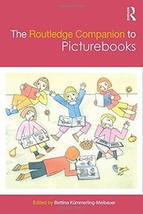
Cover pending
The Routledge Companion to Picturebooks Bettina Kümmerling-Meibauer (ed.)
2018 · Routledge · ISBN 9781138853188
An international handbook covering picturebook forms, contexts and research approaches.
Book details International handbooks and companions Picturebook theory and poetics Multimodality and social semiotics
Cover pending
The Routledge Companion to International Children’s Literature John Stephens, Celia Abicalil Belmiro, Alice Curry, Li Lifang and Yasmine Motawy (eds.)
Routledge
Book details International handbooks and companions Multilingualism and translation Migration, race and cultural identity
Cover pending
Historical Dictionary of Children’s Literature Emer O’Sullivan
2023 · Rowman & Littlefield · 2nd edition · ISBN 9781538122914
A reference guide to major authors, works and concepts across the history of writing for young readers.
Publisher or bibliographic record International handbooks and companions
Cover pending
Handbook of Research on Children’s and Young Adult Literature Shelby A. Wolf, Karen Coats, Patricia Enciso and Christine A. Jenkins (eds.)
2011 · Routledge · Paperback ISBN 9780415965064
Brings together research from literary studies, education and library and information science.
Publisher or bibliographic record International handbooks and companions
Selected covers from publishers. Additional edition covers supplied by Open Library where available.
↑